Огляди · журнал «ДентАрт» 2017 №3
Техніка знебарвлювання твердих тканин зубів
TOOTH-CLEARING TECHNIQUE

Знання морфології системи кореневих каналів – один з найважливіших елементів успішного ендодонтичного лікування. Для тривимірної візуалізації кореневих каналів використовуються різні методики: від знебарвлювання (діафонізації) до сучасного мікро-КТ-сканування. У статті зроблено огляд найпоширеніших методик знебарвлювання твердих тканин зуба з детальним аналізом протоколу їх виконання.
Успіх ендодонтичного лікування залежить від чіткого розуміння внутрішньої морфології зубів і системи кореневих каналів – у зв'язку з наявністю додаткових, латеральних відгалужень, фуркаційних ходів та апікальної дельти.
Для дослідження морфології системи кореневих каналів застосовувалися різні техніки знебарвлювання зубів, оскільки вони забезпечували тривимірне відображення кореневих каналів у відповідності із зовнішньою структурою зуба і дозволяли чітко визначити морфологію порожнини зуба та кореневих каналів.
Знебарвлювання – простий і недорогий метод, що забезпечує тривимірну візуалізацію зубів зі збереженням первинного профілю системи кореневих каналів. Однак і донині, незважаючи на велику кількість різних технік, не існує єдиного «золотого» стандарту знебарвлювання зубів.
У статті зроблено огляд найпоширеніших методик знебарвлювання твердих тканин зубів, а також аналізуються деякі особливості їх виконання.
Детальна оцінка анатомії зубів бере свій початок із робіт Carabelli,1 який у своїй праці опублікував рисунки шліфів зубів, деталізуючи систему кореневих каналів (рис. 1). У 1901 р. Preiswerk2 вводив розплавлений сплав Вуда в кореневі канали з метою визначення наявності латеральних відгалужень та анастомозів у мезіально-щічних коренях верхніх молярів та мезіальній кореневій системі нижніх молярів (рис. 2). Однак при цьому матеріал не затікав у вузькі канальці та апікальний отвір. Fischer3 (1907) вводив ацетилцелюлозу замість сплаву Вуда з подальшою декальцинацією. На жаль, через крихкість матеріалу тонкі відгалуження могли легко руйнуватися (рис. 3 а, б). Grove (1916) вводив у кореневі канали вулканіт (вулканізований каучук), декальцинував зуби 5% азотною кислотою та знебарвлював гліцерином.4
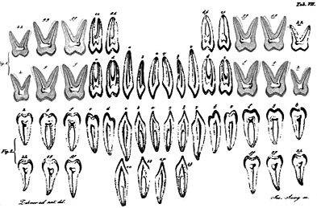
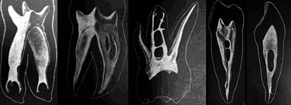
Рис. 1. Поздовжні шліфи зубів (G. Carabelli, 1894). Рис. 2. Металеві моделі системи корневих каналів після введення сплаву Вуда (G. Preiswerk, 1901).
Meyer і Sсheele (1955), використовуючи воскові репліки, показали численні латеральні відгалуження в апікальній третині кореневого каналу5 (рис. 4 а, б).
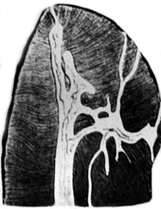
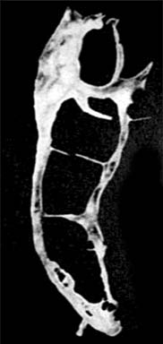
Рис. 3 а, б. Целулоїдні репліки кореневих каналів (Fischer, 1907).
У 1917 р. Hess використав декальцинацію і техніку діафонізації для вивчення внутрішньої анатомії шляхом уведення вулканізованого каучуку в кореневі канали6 (рис. 5 а, б, в).
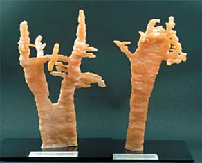
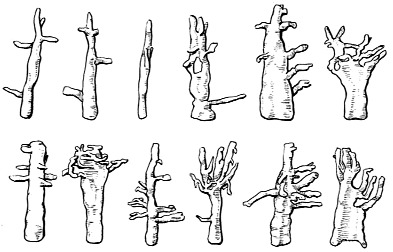
Рис. 4 а, б. Воскові репліки апікальної частини кореневих каналів (Meyer W., Scheеle Е., 1955).
Знебарвлювання – це процес видалення дегідратуючого агента і подальшої заміни його на рідину, яка має властивість «змішування» як з використовуваним дегідратаційним агентом, так і з структурою, що заповнюється.7 У зубах такою структурою є колаген.
Діафонізація – техніка обробки та збереження зразків, що дозволяє виявити особливості внутрішньої будови. М'язова тканина стає прозорою в результаті спеціальної хімічної обробки, в той час як кісткова тканина, хрящі забарвлюються барвником.
Прикладом можуть бути роботи Іоrі Tоmitа8 (фото 1 а, б).
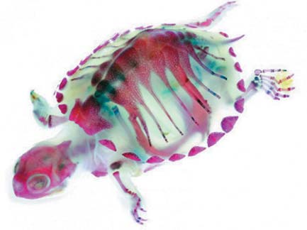
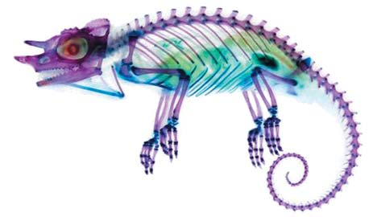
Фото 1 а, б. Зразки після діафонізації (Toumei Hyouhon, 2009).
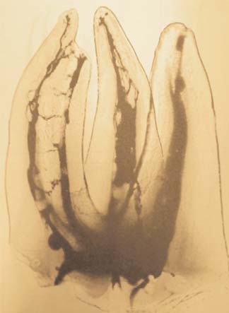
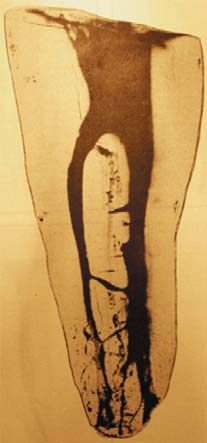
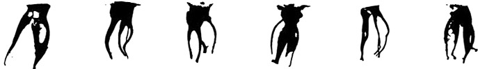
Рис. 5 а, б, в. Зразки з уведеним у систему кореневих каналів вулканізованим каучуком до і після декальцинації (W. Hess, 1917).
Pineda і Kuttler (1972) систематизували методи дослідження: пряме мікроскопічне дослідження, макроскопічні шліфи, мікроскопічні шліфи, трансверзальні шліфи та мікрометричні вимірювання, оцінка інтраоральних знімків, обтурація і декальцинація, обтурація і знебарвлювання, а також пришліфовування та рентгенографія.9
У 1982 р. Robertson і Leeb описали використання методу діафонізації для оцінки якості обтурації.10
У 1906 р. проф. Вернер Спалтехольц (фото 2) з метою підвищення якості дослідження тканин і органів та отримання тривимірного зображення запропонував технологію для мікроскопічного дослідження тканин. Вона передбачає декальцинацію кісткової тканини, декальцинацію м'яких структур і знебарвлювання в олії гвоздики, ксилолі і т.д., а також збереження шляхом занурення зразків у канадський бальзам (смола/терпентин) з показником заломлення 1,55, близьким до показника скла. Цей препарат широко використовується при виготовленні гістологічних препаратів, що підлягають тривалому зберіганню.11
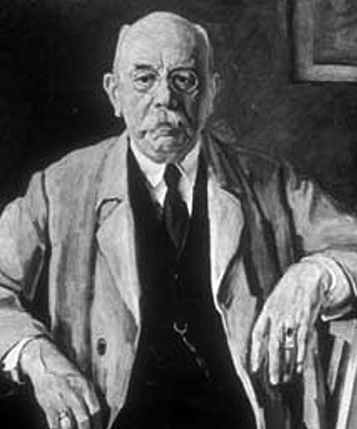
Індекс рефракції/Показник заломлення
Показник заломлення речовини – величина, що дорівнює відношенню фазових швидкостей світла (електромагнітних хвиль) у вакуумі та в даному середовищі n = c/v.
Промінь, що падає з безповітряного простору на поверхню будь-якого середовища, заломлюється сильніше, ніж при падінні на нього з іншого середовища; показник заломлення променя, що падає на середовище із безповітряного простору, називається його абсолютним показником заломлення або просто показником заломлення цього середовища, це і є показник заломлення.
При виготовленні препаратів використовується оптичний закон, згідно з яким зразок і навколишнє середовище мають відповідати одне одному. Оптичний закон може бути сформульований таким чином: об'єкт тваринного або рослинного походження має мінімальне відображення, з максимальним ступенем прозорості, коли насичений і оточений середовищем, яке має показник заломлення, що дорівнює середньому індексу заломлення цього об'єкта. Промені світла при падінні на об'єкт частково проникають у його структуру і частково відбиваються від поверхні. Частка відбитого світла досягає мінімальної щільності, а світло, що проникає всередину об'єкта, – максимальної щільності за умови, що показники заломлення (індекси рефракції) цих двох речовин – об'єкта і навколишнього середовища – однакові. У результаті вирівнювання двох показників заломлення досягається максимальна прозорість.12 Для демонстрації цього закону можна навести такий приклад. Скло у звичайних умовах прозоре; промені світла легко проникають крізь його структуру (фото 3). Якщо скло подрібнити, осколки матимуть численні кути, що відбиватимуть більшу частину світлових променів. Відтак скло стає непрозорим (фото 4). Якщо оточити осколки середовищем, яке має показник заломлення, що дорівнює показникові скла, тим самим створивши однорідну масу, скло знову стане прозорим.
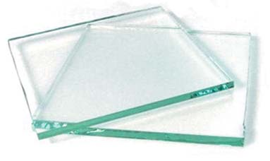
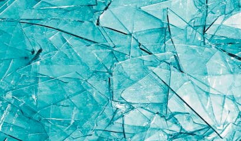
Фото 3. Прозоре скло. Фото 4. Осколки скла відбивають промені, роблячи його відносно непрозорим.
При підготовці гістологічних зразків «знебарвлювання» тканин відбувається після їх дегідратації у спирті високої концентрації. Для цієї мети використовують ефірні олії гвоздики, бергамоту, материнки або ксилол, толуол та аналогічні речовини з відносно високим показником заломлення.
Однак для збереження прозорості моделі не всі з перелічених вище рідин підходять за своїми властивостями. Ефірні олії з плином часу та під впливом світла темнішають, а також призводять до втрати прозорості зразків. Головна властивість, яку повинні мати ці розчини, – наявність показника заломлення, близького або рівного зразку (табл. 1).
| Таблиця 1. Показник заломлення різних субстанцій | |
|---|---|
| Вакуум | 1 |
| Повітря | 1.000293 |
| Етиловий спирт | 1.361 |
| Вода | 1.3330 |
| Хлорид натрію | 1.544 |
| Лід | 1.31 |
| Ацетон | 1.36 |
| Гліцерол | 1.4729 |
| Оргскло | 1.490-1.492 |
| Олія гвоздики | 1.535 |
| Лимонна олія | 1.481 |
| Апельсинова олія | 1.473 |
| Олія грушанки (вінтергринова) | 1.536 |
| Метилсаліцилат | 1,53 |
Профессор Spalteholz рекомендував застосування синтетичних з'єднань, що використовуються у парфумерії. Було виявлено, що метиловий ефір саліцилової кислоти, також відомий як метилсаліцилат, і вінтергринова олія мають показник заломлення 1,534-1,538; бензилбензоат (бензиловий ефір бензойної кислоти) – 1,568-1,570; безбарвний ізосафрол (ароматична складова сасафрасової олії) – 1,577. При змішуванні цих з'єднань у відповідних пропорціях можна отримати рідину з показником заломлення, близьким до показника об'єкта, що розглядається.7
Основна субстанція, що піддається обробці, – колаген дентину (Тип 1/фібрилярний). Він є у м'яких і твердих тканинах, у шкірі, в рогівці очей, у склері, у стінці артерій, а також в органічних частинах кісток і зубів.13
Індекс рефракції тканин зуба:
Емаль – 1,631 +/- 0,007
Дентин – 1.540 +/- 0.013
Цемент – 1.582 = / - 0.010
Водонасичений колаген – 1,53
Для успішного знебарвлювання клірингові рідини повинні мати властивість «змішування». Це особлива властивість рідин, при змішуванні яких у будь-яких пропорціях утворюється гомогенний розчин. Якщо дві рідини мають властивість змішування або мають один і той самий індекс рефракції, при їх гомогенізації утворюється прозорий розчин.
На жаль, швидкодіючий та ефективний, метилсаліцилат має потенційну токсичність і може викликати нудоту, блювання, ацидоз та інші ускладнення. При використанні цього препарату зуби повинні зберігатися у щільно закритому контейнері з мінімальним ризиком випаровування, у добре провітрюваному приміщенні. Зразки мають залишатися у метилсаліцилаті, інакше прозорість буде втрачена.
Pecora і співавт. (1993) описали спрощену техніку приготування прозорих зубів для вивчення внутрішньої анатомії та їх фіксації у пластикових блоках із самотвердіючої пластмаси для збереження прозорості14 (фото 5).
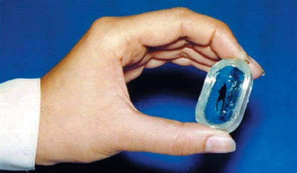
Основи техніки знебарвлювання
Хімічні процеси
- Декальцинація: видалення мінерального компонента (при обробці кісткової тканини і зубів)
- Промивання: видалення кислоти та залишкових продуктів окислення
- Дегідратація: видалення вологи з тканин зуба (втрата індексу рефракції)
- Знебарвлювання і збереження: збереження прозорості зубів (занурення у змішуючу рідину для суміщення індексів рефракції)
Етапи техніки знебарвлювання
Найліпші результати одержуємо на тільки-но екстрагованих зубах.
Підготовка зразків – екстраговані зуби зберігаються у 10% формаліновому розчині. З поверхні зразків видаляються зубні відкладення, у тому числі зубний камінь та залишки волокон періодонту.
У зубах створюється ендодонтичний доступ і провадиться первинна механічна обробка з контролем прохідності кореневих каналів К-файлом №10 для поліпшення проникнення кислоти (фото 6).
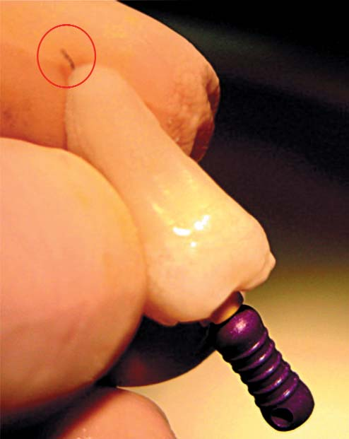
Зразки занурюємо на 2-3 дні у підігрітий (45°С) 5,25% розчин гіпохлориту натрію, механізм дії якого полягає в окисленні та гідролізі органічних компонентів – білків, а також у здатності до осмотичної сорбції рідини з клітин. Використання ультразвукової ванни значно посилює ефективність розчину.
Потім зуби промивають у проточній воді протягом 2-4 годин.
Демінералізація (декальцинація) зазвичай провадиться з використанням 5% розчину азотної кислоти. Процес триває від 12 до 24 годин до повної декальцинації. Ця кислота дає кращі результати знебарвлювання. Кожні 8 годин слід міняти розчин. У результаті дії кислоти повністю розчиняється емаль зубів і демінералізується дентин (фото 7). Треба періодично оглядати зуби для запобігання їх повній деградації.
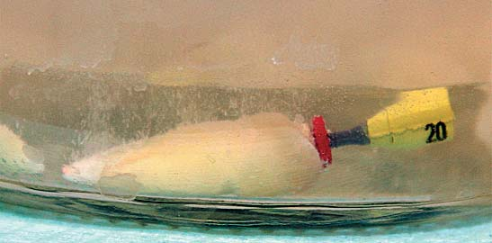
Застосування азотної кислоти як демінералізуючого агента має деякі особливості. З огляду на можливу зміну відтінків зразків, а також усадку органічної складової тканин зуба внаслідок дії цієї кислоти не слід застосовувати високі концентрації розчину або використовувати соляну кислоту тієї ж концентрації.10
Оцінку декальцинації можна зробити шляхом рентгенологічного дослідження у порівнянні з необробленими зубами. Повноцінно декальциновані зуби втрачають рентгеноконтрастність (фото 8 а, б, в).
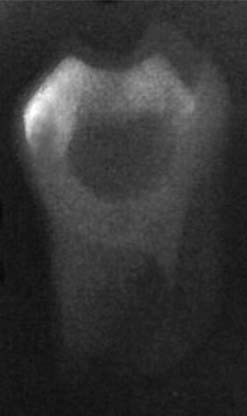
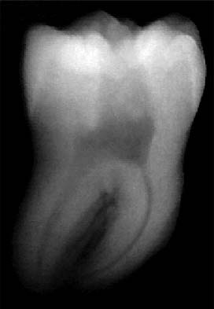
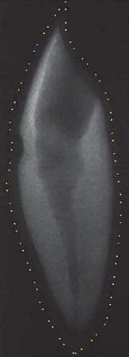
Фото 8 а, б, в. Вигляд зразків при Rо-дослідженні. Рентгенопрозорість свідчить про ступінь демінералізації: а) повноцінна демінералізація; б) недемінералізований зразок для порівняння; в) неповна демінералізація (пунктиром окреслено первинні межі зразка).
Після декальцинації зуби промивають у проточній воді (4-6 годин) з метою видалення залишкових продуктів окислення (фото 9 а, б).
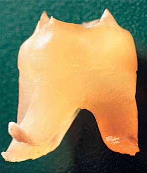
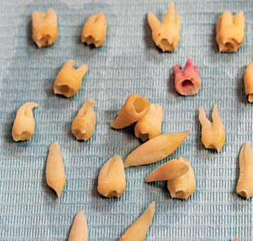
Фото 9 а, б. Промивання зразків у проточній воді.
Далі потрібно дегідратувати зубні тканини, підвищуючи концентрації спирту, щоб процес ішов поступово. При цьому фіксується органічний компонент. Цілковита дегідратація досягається при зануренні зубів у 100% розчин спирту. Це запобігає виникненню опакових зон після знебарвлювання. Дегідратацію зразків провадять з використанням спиртових розчинів, підвищуючи концентрацію (60%, 80%, 96%), на 8, 4 і 2 години відповідно. Після дегідратації зразки висушують на салфетці, що вбирає вологу (фото 10 а, б).
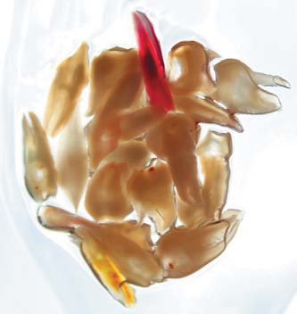
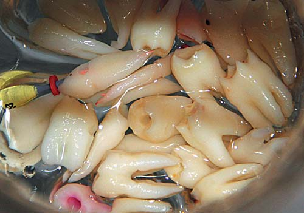
Фото 10 а, б. Висушування зразків.
Для ліпшої візуалізації систему кореневих каналів можна оглянути при наявності або обтураційного матеріалу, або барвника (гематоксилін,15 вінілполісилоксан,16 чорна туш).17,18
Метиленовий синій не можна застосовувати як барвник, якщо в методиці використовується метилсаліцилат, оскільки за безпосереднього контакту цей барвник розчиняється.19
Краще використати чорнило (India ink) – завдяки малому розміру часточок (3.79-5.88 мкм).24 Їх величина близька за розміром до незначних діаметрів апікальних отворів (4-260 мкм), як і в зоні фуркації (4-437 мкм). Часточки барвника можуть проникати у додаткові фуркаційні канали. Але цей барвник не може проникати у дентинові канальці, оскільки їх діаметр становить 0,6-3 мкм.20
Слід запечатати апікальний отвір воском до початку декальцинації зразків з метою запобігання забарвлюванню зовнішньої поверхні зубів, яка у свою чергу повністю дегідратована і може забруднитися барвником.
У 1975 р. Hasselgren і Tronstad додатково використали контрастний розчин (туш) для ідентифікації каналів. Вони виявили, що барвник занадто глибоко проникав у структури зубів і його важко видалити. З метою контролю проникнення пігменту слід змішувати барвник із желатином. Забарвлений желатин проникає у всі відгалуження кореневої системи.21
Для приготування забарвленої желатинової суміші беруться 12 г безбарвного желатину і розчиняються у 200 мл холодної води. Суспензія нагрівається до повного розчинення, з наступним додаванням 20 мл чорного барвника. Потім отриманий розчин охолоджується до загущення.
Для ін'єкції желатинової суспензії барвника застосовують інсуліновий шприц. При цьому слід бути обережними, щоб не зафарбувати зовнішню поверхню зубів. З цією метою можна закрити апікальний отвір воском.
У 1980 р. Robertson і співавт. вводили барвник у кореневий канал при негативному тиску з боку апікального отвору з використанням аспіратора.10 Pecora і співавт. (1993) вводили барвник у желатині під тиском через зону доступу, проштовхуючи желатин у всю систему кореневих каналів.14 Поява желатинової бульбашки в зоні апекса свідчить про гарне заповнення каналів. Об'єм барвника, що вводиться, може становити приблизно 0,5 мл.
Після забарвлювання зуби поміщають у 100% спиртовий розчин на 4 години для фіксації пігменту.22
Етап знебарвлювання. Перед цим етапом усі зразки бажано занурити на 2 години у розчин ксилолу. Це повертає дентинові його щільність, практично таку саму, як і в природних зубах.10
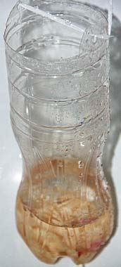
Потім зразки занурюють у розчин метилсаліцилату для безпосереднього знебарвлювання твердих тканин, тому що показник заломлення цього розчину, як уже було сказано, близький до показника заломлення органічної матриці гідратованого дентину (фото 11).
Знебарвлені зразки слід зберігати у метилсаліцилаті для забезпечення їх прозорості.
Технологія дозволяє візуалізувати внутрішню анатомію, а також оцінити якість обтурації різними системами23 (фото 12 а, б, в).18,19
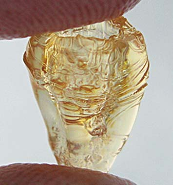
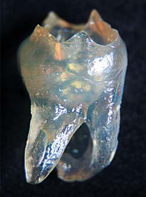
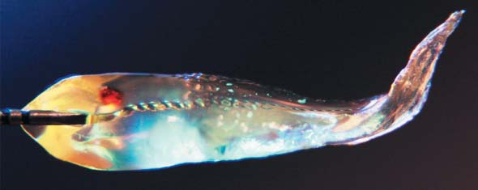
Фото 12 а, б, в. Зразки після знебарвлювання.
Слід сказати і про деякі обмеження цієї техніки:
- Зразки, які тривалий час зберігалися у формаліні, набувають щільної структури, яка різко знижує ефективність дії хімічних агентів. Відтак якість знебарвлювання значно погіршиться.
- У пересушених зразках погіршується проникнення знебарвлюючого агента.
- Великі зуби вимагають тривалішого періоду занурення у знебарвлюючу рідину.
- Надлишкова дегідратація призводить до усадки зразків, що може змінювати візуалізацію, особливо за наявності обтураційного матеріалу в кореневому каналі.
- При застосуванні метилсаліцилату слід використовувати скляний лабораторний посуд з притертими кришками.
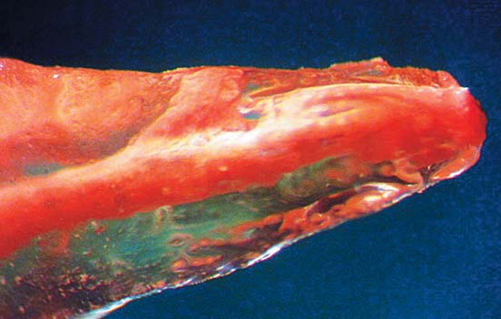
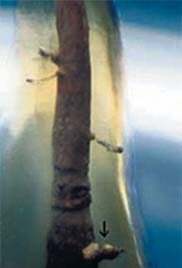
Фото 13. Латеральне відгалуження в апікальній третині кореневого каналу при обтурації технікою вертикальної конденсації. Зб. 24х. Фото 14. Візуалізація додаткових кореневих каналів, зб. 15х (Venturi М. і співавт., 2003).
Нижче подано найпоширеніші методики знебарвлювання, запропоновані різними авторами.
Протокол Venturi M.23
- Демінералізаційний розчин: 7% мурашина кислота, 3% соляна кислота, 8% цитрат натрію у водному розчині (буфер)
- Постійна активація із заміною розчину кожні 3 дні
- Промивання у проточній воді 2 години
- Занурення зразків у 99% розчин оцтової кислоти на ніч (поліпшує якість дентинного матриксу завдяки здатності фіксувати органічну складову)
- Промивання дистильованою водою
- Дегідратація усе вищими концентраціями етилового спирту – 30, 50, 70, 90 і 96% (по 30 хв кожна)
- Знебарвлювання і зберігання у розчині метилсаліцилату
Методика Dr. Jorge Vera10
- 5% р-н азотної кислоти на 48 годин (постійно збовтувати)
- Промивання протягом 4-х годин
- 1 ніч у 80% р-ні етилового спирту; 2 рази у 90% р-ні етилового спирту; 3 рази у 100% р-ні етилового спирту
- Ксилол на 2 години (зміцнює дентин)
- Метилсаліцилат для знебарвлювання
Техніка Dr. Arnaldo Castellucci24
- 30 хв у NaOCl для розчинення органічних залишків періодонтальної зв'язки
- 3 дні у 5% р-ні азотної кислоти за кімнатної температури
- Рентгенконтроль для перевірки демінералізації, за необхідності продовжити на 1 день у 5% азотній кислоті
- 4 години промивання у проточній воді
- 12 годин у 80% р-ні етилового спирту
- 2 години у 90% р-ні етилового спирту
- 2 години у метилсаліцилаті
Протокол Dr. Gary Carr24
- Декальцинація (азотна, мурашина або соляна к-та). 5% азотна кислота
- Перевірка шляхом рентгендослідження
- Промивання водою протягом 24 годин
- Занурення у спирт 50%, 70%, 80%, 90%, 95%, 100% – по 1 годині кожної концентрації
- Занурення у метилсаліцилат/вінтергринову олію
Протокол Dr. Craig Barrington24
- 24 години у кислоті: соляна кислота – найліпші результати на тільки-но екстрагованих зубах – зуби розм'якшуються
- 24 години у спирті: етиловий спирт
- 5 хв – 3 дні в олії: метилсаліцилат – від хвилин до годин; рідина «А» – від годин до днів – зуби ущільнюються
Техніка Dr. Sergio Rosler25
Підготовка зразків:
- очистити поверхні кореня від зубного каменю та відкладень;
- забезпечити доступ до кореневих каналів;
- оцінити прохідність кореневих каналів;
- занурити у 4,2% р-н NaOCl на 24 години;
- активувати р-н в ультразвуковій ванні 20 хв (посилює проникаючу активність гіпохлориту натрію).
- 5% р-н азотної кислоти на 3 дні із заміною кожні 8 годин
- Промивання у проточній воді 4 години
- Занурення в етиловий спирт 60% – 8 годин, 80% – 4 години, 96,6% – 2 години. Просушити на салфетці, що вбирає вологу
- Занурення у ксилол на 2 години (ущільнення дентину)
- Занурення у 99% метилсаліцилат для знебарвлення
Певна токсичність і специфічний запах метилсаліцилату роблять його незручним у застосуванні. Ураховуючи важливість індексу рефракції, д-р Craig Barrington запропонував використовувати як знебарвлюючий агент імерсійну олію. Це безбарвна рідина, що має необхідний показник заломлення – 1,5300.
Однак просочування тканин також залежить і від в'язкості знебарвлюючої субстанції. Найліпші властивості зафіксовані у імерсійної олії Тип А (Cargille, США) з низькою в'язкістю (фото 15).
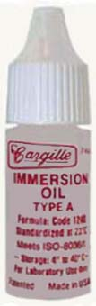
Склад: Гідрогенізований терфеніл, Терфеніл 5 мг/см³, Природні вуглеводні 5 мг/см³, Полібутени 5 мг/см³.
Зразки, отримані таким способом, можна використовувати у наукових, навчальних цілях, а також для створення арт-фото (фото 16 а, б, в).
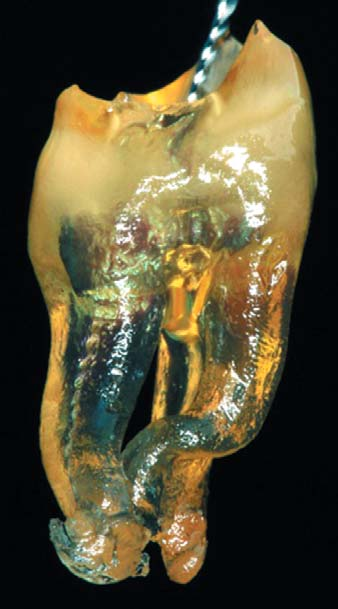
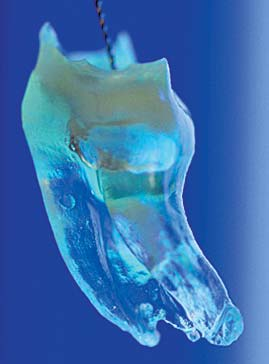
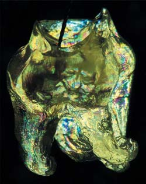
Фото 16 а, б, в. Знебарвлені зуби за різного освітлення: а) звичайне світло; б) в УФ-променях; в) у поляризованому освітленні.
Сучасні цифрові технології відкривають перспективи для нових досліджень, а також створюють можливість модифікувати старі. Рентгенологічна мікро-комп'ютерна томографія (мікро-КТ), розроблена на початку 1980-х років, є неінвазивним та недеструктивним методом отримання дво- та тривимірних зображень. Об'ємний піксель (воксель) при мікро-КТ має діапазон 5-50 мкм і дозволяє отримати зображення високої чіткості.26
Мікро-КТ використовується для аналізу внутрішньої анатомії зубів, інструментальної обробки кореневого каналу, обтурації, повторного ендодонтичного лікування, фізичних та біологічних властивостей матеріалів27 (фото 17).
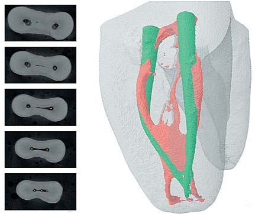
Мікро-КТ не лише використовується для дослідження, але і є в той же час тривимірною цифровою моделлю натурального зуба. Поєднання двох технологій – 3D-друку і мікро-КТ – дало можливість створювати точні репліки натуральних зубів, які повторюють усі особливості внутрішньої морфології.29 Такі моделі з успіхом можна застосовувати з навчальною метою для відпрацювання мануальних навичок з візуалізацією результатів роботи (фото 18).
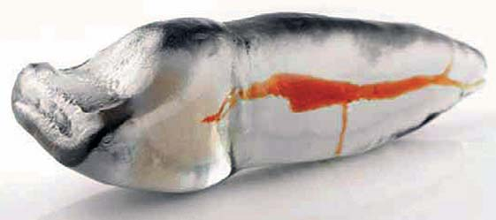
На жаль, ця методика вимагає вартісного обладнання – мікро-КТ-сканера та 3D-принтера з високою роздільною здатністю.
Таким чином, знебарвлені зразки зубів – досить цінний і недорогий засіб у навчанні та підвищенні практичних мануальних навичок в ендодонтії на доклінічному етапі. Ця техніка полегшує вивчення анатомії кореневих каналів, дозволяє вивчити техніки інструментальної обробки та обтурації, виявляючи можливі технічні помилки. Тактильні відчуття будуть близькими до реальної клінічної ситуації.
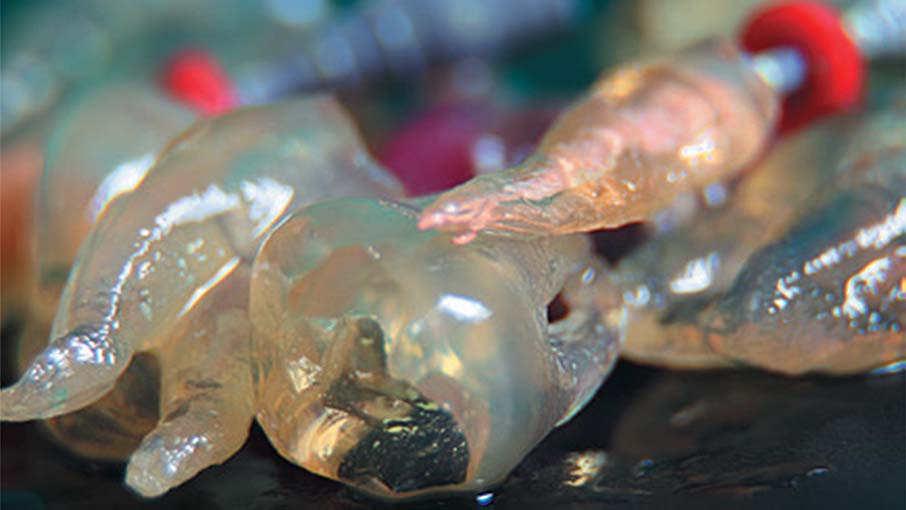
Література
- Carabelli G. Systematisches handbuch der Zahnheilkunde. 2 Vols & Atlas, 8, Wien, 1894, Apud, Hdrlicka A: Shovel-shaped teeth. Am J Phys Anthropol 3:, 1920. – P.429-465.
- Preiswerk G. Die pulpaamputation, eine klinische, pathohistolоgische and bakteriologische studie. Osterrung. V. F. Zahnheilkunde, 1991, v. XVII, P. 145-220, apud, Barret M.T.: The internal anatomy of the teeth with special reference to the pulp with its branches. – 1901, D Cosmos 67. – P.581-592.
- Fischer G. Uber die feinere anatomie der wurzelkanale menschlicher zahne, deustche monastsch. F Zahnheilk 1907, Apud Mueller A: Anatomy of the root canals of the incisor cuspids and bicuspids of the permanent teeth. J Am Dent Assoc 20:, 1933. – P.1365-1386.
- Grove G.J. The biology of multi canaliculed roots.– D Cosmos 58. – 1916. – P.728-733.
- Meyer W., Scheele E. Die Anatomie der Wurzelkanale der oberen Frontzahne. Detsch Zahnarztl Z, 10: P.1041-1045.
- Hess W. Zur Anatomie der Wurzelkanale des menschlichen Gebisses mit Berucksichtigung der feineren Verzweigungen am Foramen apicale. Schweiz Vjschr Zahnheilk 1917: 27: P.1-52.
- William J. Krause. The art of examining and interpreting histologic preparations: a laboratory manual and study guide for histology / Second Edition. 2004. – 104 р.
- Toumei Hyouhon. New World Transparent Specimens. –Shogakukan Inc., Japan, 2009. – 72 p.
- Pineda F., Kutler Y.: Mesiodistal and buccolingual roentgenographic investigation of 7275 root canals. Oral Surg 33: 1972. – P.101-110.
- Robertson D., Leeb I.J., McKee M., Brewer E. A clearing technique for the study of root canal systems. Journal of Endodontics, 1980. – 6. – P.421-424.
- Hermann Prinz. The Spalteholz method of preparing transparent animal bodies. – Dental Cosmos: A monthly record of dental science. – Vol. LV, 1913. – P.374-379.
- Физический энциклопедический словарь. — М.: Советская энциклопедия. Главный редактор А. М. Прохоров. 1983. – 944 с.
- Zhuo Meng, X Steve Yao, Hui Yao. Measurement of the refractive index of human teeth by optical coherence tomography Journal of Biomedical Optics (Impact Factor: 2.88). 01/2009; 14(3):034010.
- Pecora J.D., Silva R.S., Sousa-Neto M.D.: apresentacao de uma tecnica simplificada de diafanizacao de dentes e sua inclusao em blocos transparentes. odonto 2: 1993. – Р.384-385.
- Vertucci F.J. Root canal anatomy of the human permanent teeth. Oral Surg Oral Med Oral Pathol 1984; 58: – Р.589-599.
- Fachin E.V., Rossi Jr. A., Duarte T.S. Contribuicao ao estudo da tecnica da diafanizacao. Rev Fac Odontol Porto Alegre 1998;39: P.3-8.
- Mancilha F.A., Vance R., Habitante S.M., Simoes S. Estudo comparativo da anatomia interna de dentes anomalos pelos metodos radiografico e diafanizacao. SOTAU Rev Virtual Odontol 2008;5: – P.22-29.
- Carvalho M.G.P., Bier С.A.S., Wolle C.F.B., Montagner F., Lopes A.S. Empregos clinicos e laboratoriais dos dentes transparentes. Saude (Santa Maria) 2003;29: – P.112-117.
- Ravanshad S., Torabinejad M. Coronal dye penetration of the apical filling materials after post space preparation. Oral Surg Oral Med Oral Pathol 1992; 74: – P.644-647.
- Yoshikawa M., Noguchi K., Toda T. Effect of particle sizes in India ink on its use in evaluation of apical seal. J Osaka Dent Univ 1997; 31: – P.67-70.
- Hasseigren and Tronstad: the use of transparent teeth in the teching of preclinical endodontics. J Endodont 1 (8): 1975. – P.24-34.
- Almeida J., Madruga F.C., Sousa E.L.R. Presenca do canal cavo interradicular em molares diafanizados. Rev Endod Pesquisa Ensino On Line. – 2007; 3: – Р.1-11.
- Venturi M., Prati C., Capelli G., Falconi M., Breschi L. A preliminary analysis of the morphology of lateral canals after root canal filling using a tooth-clearing technique. – International Endodontic Journal, 36, 2003. – P.54-63.
- http://clearedteeth.blogspot.com/p/clearing-teeth-recipes.html
- Topham G., Duran-Sindreu F., Bueno R., Roig M. Propuesta de un protocolo de diafanizacion. Utilidad en endodoncia. Rev Oper Dent Endod 2008; 5: – P.86.
- Swain M.V., Xue J. State of the art of Micro-CT applications in dental research. International journal of oral science. 2009;1: –P.177-188.
- Versiani MA, Pecora JD, Sousa-Neto MD. The anatomy of two-rooted mandibular canines determined using micro-computed tomography. International endodontic journal. 2011;44: – P.682-687.
- Marciano M.A., Duarte M.A.H., Ordinola-Zapata R. et al. Applications of microcomputed tomography in endodontic research Current Microscopy Contributions to Advances in Science and Technology (A. Mendez-Vilas, Ed.), 2012, FORMATEX. – P.782-788.
- L. Stephen Buchanan. Redefining endodontic education. – Roots, 3, 2012. – P.30-32.